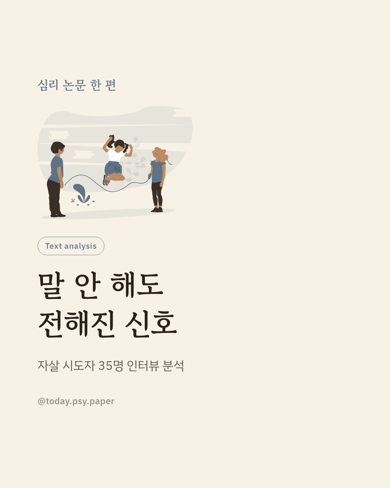
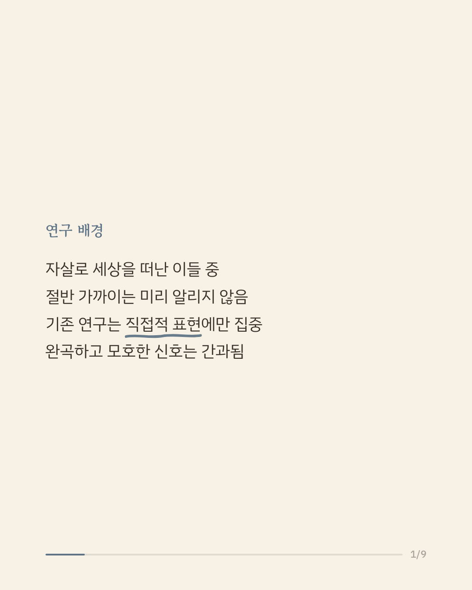
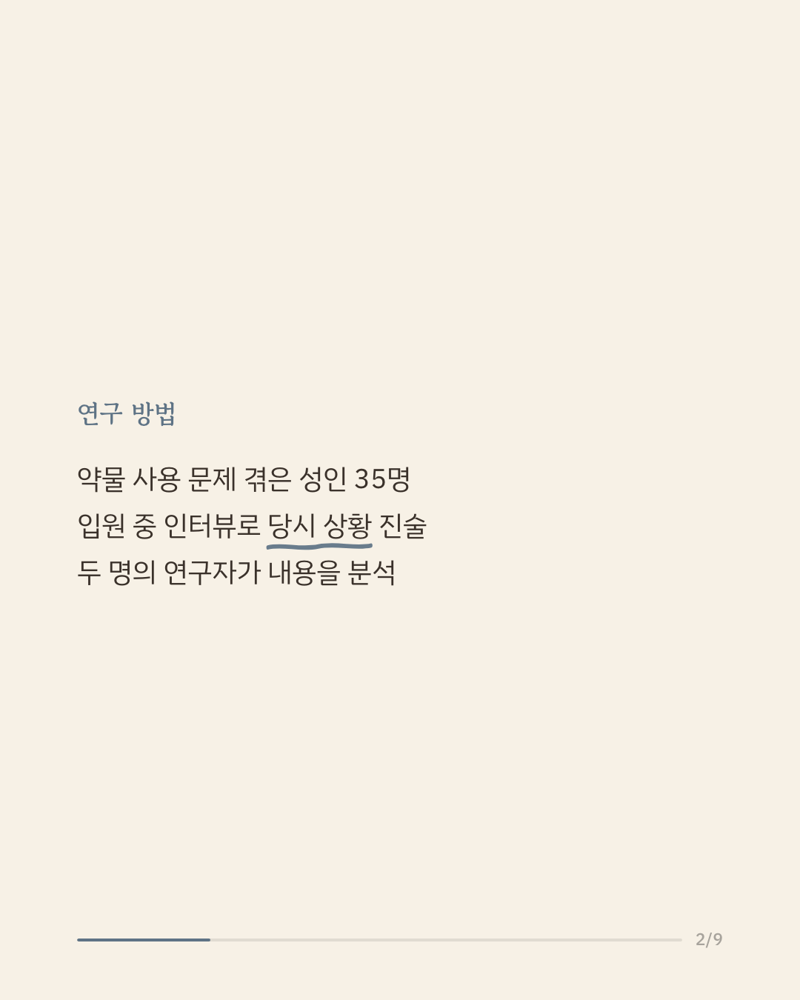
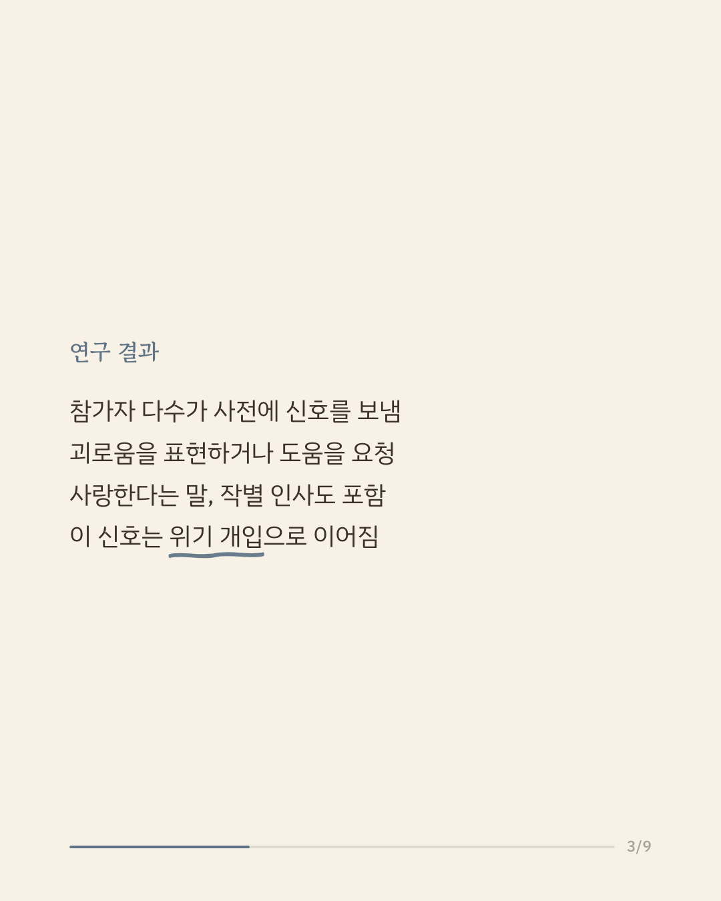
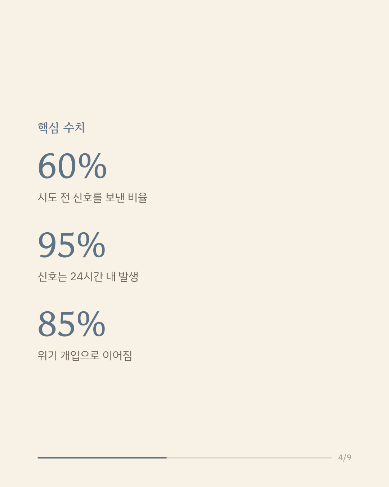
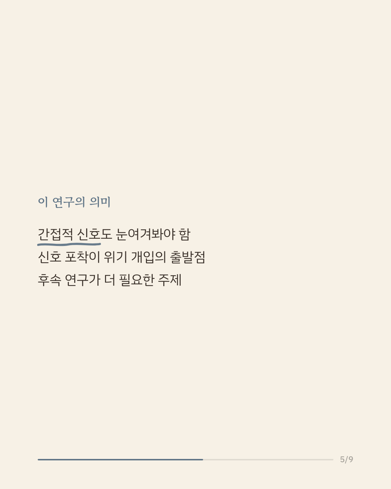
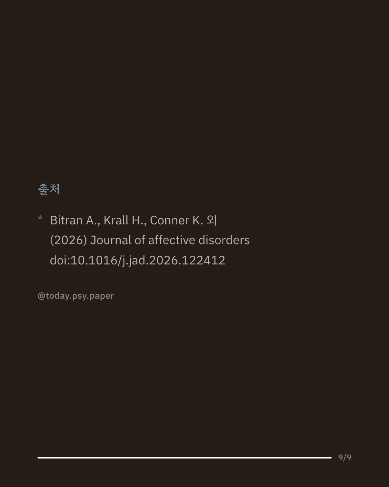

자살로 세상을 떠난 이들 중 절반 가까이는 생전에 그 뜻을 명확히 밝히지 않았다고 알려져 있습니다. 기존 연구 대부분은 '죽고 싶다'는 직접적인 표현만 살펴봐 왔는데, 힘들다는 뜻을 에둘러 전하는 간접적이고 모호한 신호는 놓치기 쉬웠습니다. 이 연구는 자살 시도 후 입원한 성인 35명의 인터뷰를 분석해, 시도 전후로 어떤 신호가 오갔는지 살펴봤습니다. 참가자의 상당수는 시도 전에 어떤 형태로든 신호를 보낸 것으로 나타났고, 이런 신호의 상당 부분은 시도 직전 24시간 안에 집중돼 있었습니다. 신호 중 일부는 힘들다는 표현, 도움 요청, 사랑한다는 말이나 작별 인사처럼 간접적인 형태였으며, 이런 신호는 위기 상황에서 주변의 개입으로 이어지는 경우가 많았습니다. 이 결과는 명확한 말이 아니더라도 주변의 신호를 알아차리는 일이 위기 개입의 중요한 출발점이 될 수 있음을 보여줍니다. 다만 물질 사용 문제를 겪은 입원 환자라는 특정 집단을 대상으로 했고, 인터뷰 회상에 의존한 만큼 기억의 왜곡 가능성도 있습니다. 단일 연구이므로 확대 해석은 조심해야 합니다. 출처: Journal of Affective Disorders (2026), 'Characterizing direct and indirect suicide-related disclosure in the proximal period surrounding an attempt: A qualitative analysis' 힘든 마음이 들 때는 자살예방상담전화 109, 정신건강상담전화 1577-0199에서 도움을 받을 수 있습니다. #자살예방 #위기개입 #정신건강정보 #심리학연구 #논문리뷰
python3 publish.py 42668096